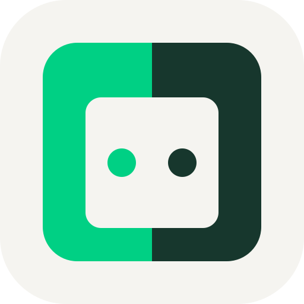

01 / 青绿信笺 · MINT LETTER
聊天、投稿、分享日常。在友间，每一段关系都有属于自己的温度。
一间空间，留给熟悉的人。
今天的风，很像那天。
下次见面，再讲给你听。
还好，我们一直都在。
02 / 夜间来信 · AFTER DARK
天色暗下来，熟悉的人还在。给聊天、投稿和那些说不完的日常，留一盏灯。
把心里的话，投递到友间。
03 / 蓝绿邮戳 · POSTMARK
一封信的距离，就是一句想说的话。让我们的消息、照片和故事，在这里相遇。
向熟悉的人，寄出今天。
04 / 双色套印 · TWO INKS
仍有来信的暖意，但不再让暖色主导。青绿写下“友间”，珊瑚色只留下一个小小印记。
一封寄给我们自己的信。